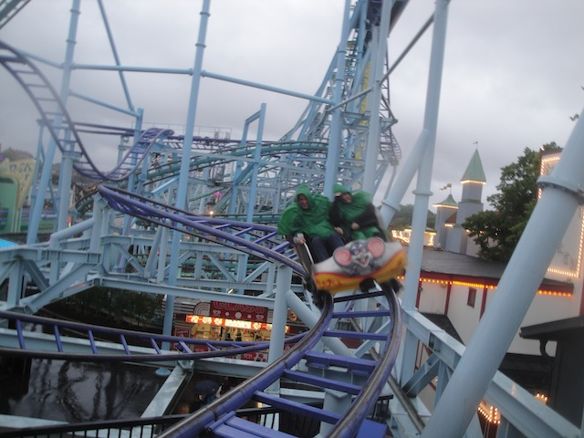
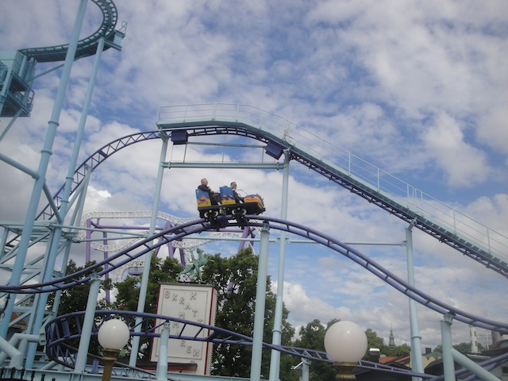
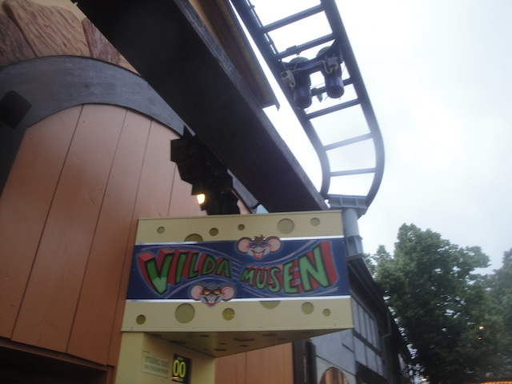

| |
Vilda Musen Review

We're here at Gröna Lund. Today's coaster is the park's Gerslauter Bobsled coaster. Vilda Musen. It may not look like anything special, but this is a really fun little ride. I know I like all the Gerslauter Bobsled coasters, but this one is definetly so far, my favorite one. I know this technically doesn't count as a Wild Mouse, because if it did, then this would be without a doubt, my favorite Wild Mouse coaster. But never the less, it's still a really fun ride. So let's hop in the cars, pull down the lap bar, and away we go. We head around a turn and go up the lifthill, getting a nice view of Gröna Lund, and especially Jetline, as we're rising right towards that. We crest the lifthill, and head down into a small first drop. It's not very big, but it gives us some speed, and is just a lot of fun. WEE!!! We head up a small little hill, and then go into a couple twisty bits. We head through a couple of slightly downward helixes, that only increase our speed. Ooh, this is getting fun. We head up a sort of small twisted hill, only to glide into a set of trims. Eh, it's to be expected, and honestly, doesn't even affect the ride that much. Plus, you now get a great view of the Space Shot, Jetline, and the Baltic Sea. You go through a couple Wild Mouse turns now, so you can see why they're trying to pass this off as a Wild Mouse. But it's not typical switchbacks. They're a little more compact and more random. After the second Wild Mouse turn, we head right into a slightly curved drop. Wee. We gain more speed. This leads us straight into another upward incline, nothing special, but hey. I'm still enjoying it. We head around another banked turn, into another banked turn. Definetly enjoying the laterals here. Of course, we glide into some brakes, because there's a lot of those on this ride. But hey. Not a big deal. We head into another wild mouse switchback, go through a bigger turn, and head down a small drop. Wee!! This leads us right into another airtime hill, and there's even a little pop of floater air here. That's enjoyable. We head up a small hill, but sadly, no airtime here. We head around a couple more wild mouse turns, only to go through another set of brakes. You're seeing a pattern here, but again, they don't even slow us down that much. We then head down a small curved drop, only to glide straight up into an upward banked helix. Yeah, this may not seem like a Wild Mouse, but damn it. It's really fun. Head around another banked turn, get some laterals, and glide right into the brake run. I know this isn't the best coaster ever. It's not super fast, doesn't have a ton of forces or airtime (well, airtime is a force. That was a stupid comment). But something about the ride is just plain fun. The turns have some nice laterals, there's a nice variety, and something about just twisting over the boardwalk and intertwining with Jetline just seems so cool. So yeah. I'd totally recommend checking out this ride. It's a lot of fun, and worth your time.
7/10
Location: Gröna Lund
Opened: 2003
Built by: Gerstlauer
Last Ridden: June 24, 2014
Vilda Musen Photos




Home
|